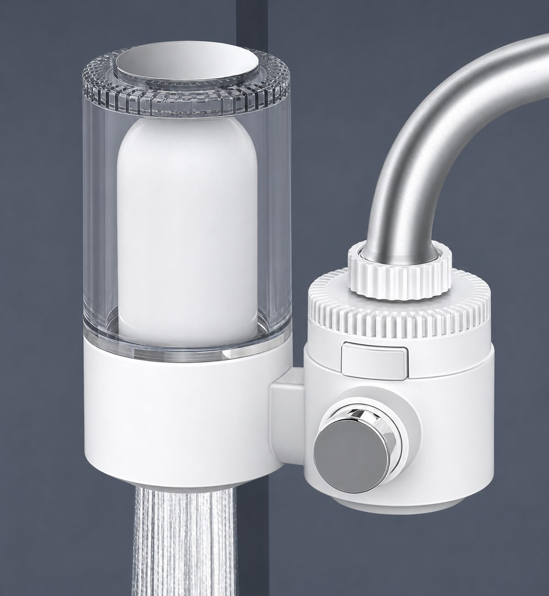
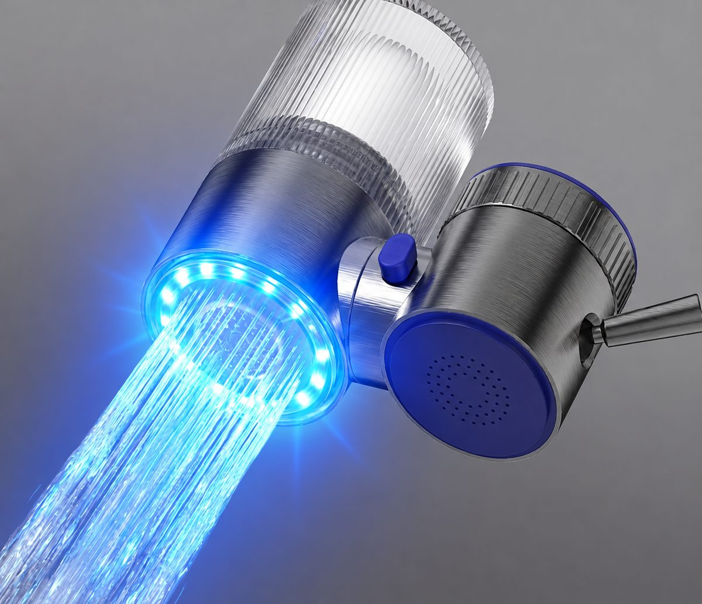
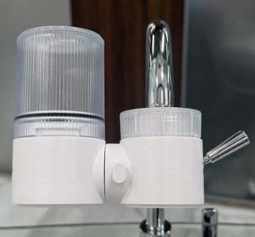
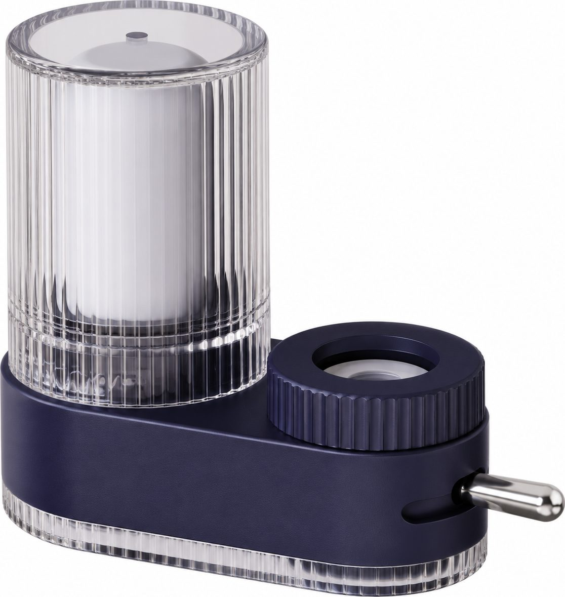
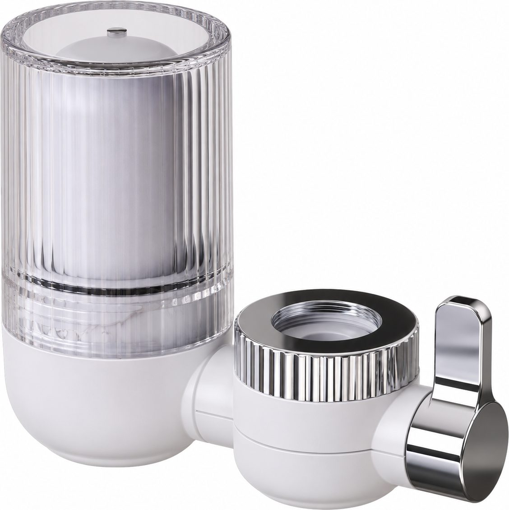

FaucetRP-F01
Classic faucet filter
Get a QuoteHome / Products / Faucet Filters
Faucet-mounted water filters for kitchen and bathroom taps, supplied as finished units and replacement cartridges.
13 models. Specifications are confirmed per model and order.

FaucetClassic faucet filter
Get a Quote Faucet
Faucet360° rotatable faucet filter
Get a Quote
FaucetTurbine LED faucet filter
Get a Quote Faucet
Faucet270° rotatable faucet filter
Get a Quote Faucet
FaucetCeramic valve-core faucet filter
Get a Quote
FaucetCarbon-fibre faucet filter
Get a Quote Faucet
FaucetIntegrated faucet and purifier
Get a Quote Faucet
FaucetFilter-life display faucet filter
Get a Quote Faucet
FaucetMicrobubble faucet filter
Get a Quote
FaucetFaucet-mounted water filter — integrated
Get a Quote
FaucetFaucet-mounted water filter — split
Get a Quote Faucet
FaucetMulti-outlet faucet filter
Get a Quote Faucet
FaucetStainless steel faucet filter
Get a Quote